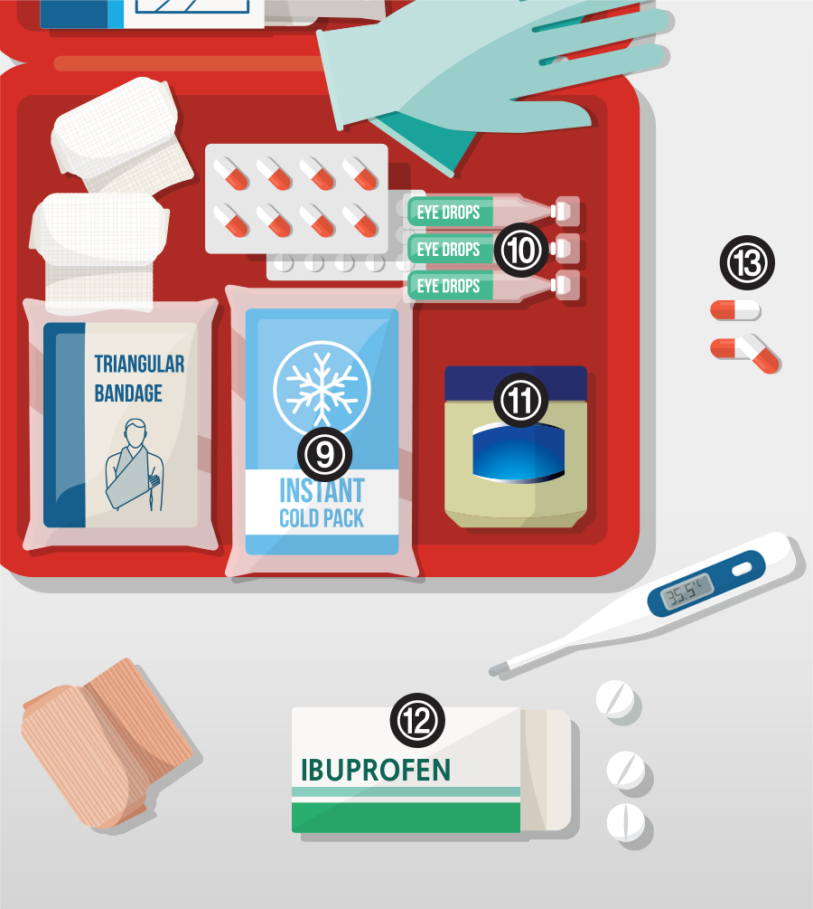

1) 소독 물티슈
물이 부족해 씻기가 어렵더라도 상처는 반드시 소독해야 합니다. 낱개 포장된 여러 장을 구비합니다.
2) 위생장갑
간염 같은 질병을 보유한 사람의 상처를 처치할 때 맨손으로 만지지 않도록 합니다. 미세한 상처가 있다면 감염될 수 있습니다.
3) 족집게
야외에서는 가시 같은 것이 박히기 쉽고 손으로는 빼기 어렵습니다.
4) 항생연고
베이거나 찢어진 상처에 발라 염증이 생기지 않도록 합니다.
5) 소독 처리된 거즈 패드
6) 붕대, 다양한 크기의 1회용 반창고
7) 옷핀
붕대를 고정시킬 때 외에도, 옷이나 가방이 찢어졌을 때 임시 봉합용으로 유용합니다.
8) 알로에겔
화상은 얼음이나 찬 물로 열기를 빼고 알로에겔을 바릅니다.
피부가 벗겨진 심한 화상은 소독된 거즈 패드에 알로에겔을 적셔 얹어 감염을 막고 최대한 빨리 진료를 받아야 합니다.

9) 콜드팩
얼음 찜질이 필요한 삔 부상, 고열, 화상의 진정에 사용합니다.
10) 아이워시
눈에 이물질이 들어갔을 때 씻어냅니다. 아이드롭스는 한 번 개봉하면 쉽게 오염되므로 1회용으로 소량씩 포장된 것을 갖추어 둡니다.
11) 페트롤리움 젤리
춥거나 건조할 때는 입술과 피부가 트기 쉽고, 방치하면 갈라지고 피가 나는 상처가 되기도 합니다. 튼 피부는 ‘바세린’으로 더 많이 알려진 페트롤리움 젤리를 바르면 곧 회복됩니다.
12) 진통제
세균에 감염되면 대체로 열이 나는데, 바로 진료를 받을 수 없더라도 일단 열을 낮추어야 합니다. 대부분의 진통제가 해열제를 겸합니다.
13) 지사제
소독이 제대로 되지 않은 물을 마시면 발열, 설사를 일으키고, 재난 상황의 스트레스로도 장 질환이 발생할 수 있습니다. 설사는 탈진, 탈수로 이어지므로 지사제를 투여합니다.
유아와 아동은 고열과 설사에 취약하므로 체온계와 좌약 지사제를 함께 구비하는 것이 좋습니다.